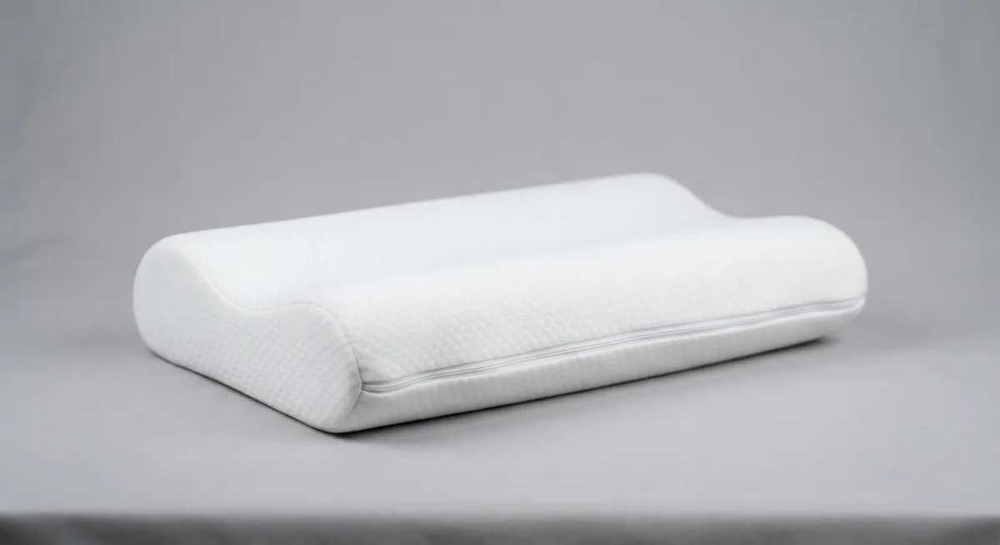

Oreiller à mémoire de forme Le Classique
Pour tous les dormeurs
- Un maintien de la nuque sans sensation de rigidité
- Adapté au dos, au côté et au ventre
- Adoption rapide : 2 à 3 nuits en moyenne
offerte 🌙 100 nuits
d'essai 🛡️ Garantie
3 ans
🔒 Paiement sécurisé : CB, Visa, Mastercard, Apple Pay, Google Pay
Matériaux et dimensions
- Dimensions : 60 × 40 cm
- Hauteur : 11 cm (bord haut) / 9 cm (bord bas)
- Fermeté : Moyenne
- Garnissage : Mousse viscoélastique à mémoire de forme
- Housse : Tricot 3D respirant, fermeture éclair, lavable à 40 °C
- Garantie : 3 ans
Entretien
Ouvrez la fermeture éclair et retirez la housse. Lavez-la en machine à 40 °C, puis séchez-la à l'air libre. La mousse ne se lave pas : aérez-la régulièrement.
Livraison et retours
Préparation sous 24 à 48 h ouvrées, livraison en 3 à 5 jours ouvrés en France métropolitaine, avec suivi. L'oreiller arrive compressé sous vide : laissez-le reprendre sa forme quelques heures avant la première nuit.
Essai de 100 nuits
Dormez avec votre oreiller jusqu'à 100 nuits. S'il ne vous convient pas, nous organisons le retour gratuitement et vous remboursons intégralement.
Pourquoi choisir Le Classique ?
Vous n'avez jamais dormi sur un oreiller ergonomique ? Le Classique est fait pour vous. Son contour légèrement ondulé soutient la nuque tout en restant proche de la sensation d'un oreiller traditionnel.
Un maintien tout en douceur
Le bord le plus haut se loge sous la nuque, sans la forcer. Vous gardez la tête alignée avec la colonne, sans avoir l'impression de dormir sur un appareil.
Une mousse qui s'adapte à vous
La mousse à mémoire de forme se creuse sous le poids de votre tête et répartit la pression, là où un oreiller en plumes s'écrase au fil de la nuit.
Deux hauteurs en un
Retournez-le pour choisir entre le bord haut (11 cm) et le bord bas (9 cm), selon votre carrure et votre position.
Une housse fraîche et saine
Le tricot 3D laisse circuler l'air. La housse zippée se retire et se lave en machine à 40 °C.
Le Classique selon votre position de sommeil
Voici comment l'utiliser, et dans quels cas un autre modèle vous conviendra mieux.
Sur le dos
IdéalPlacez le bord le plus haut sous la nuque : la tête repose dans le léger creux, sans basculer vers l'avant.
Sur le côté
AdaptéLe bord haut comble une partie de l'espace entre l'épaule et la tête. Si vous avez les épaules larges, préférez L'Ergonomique en 12 cm.
Sur le ventre
IdéalC'est notre modèle le plus adapté : utilisez le bord bas pour ne pas relever la tête et cambrer la nuque.
Oreiller à mémoire de forme ou oreiller classique ?
Ce qui change quand on remplace un oreiller en plumes ou en fibres par Le Classique.
| Critère | Le Classique | Oreiller en plumes ou fibres |
|---|---|---|
| Maintien de la nuque | Contour doux qui suit la nuque | Aucun, la tête s'enfonce |
| Au fil de la nuit | Garde sa forme | S'aplatit, à retaper |
| Positions | Dos, côté, ventre | Variable selon le remplissage |
| Temps d'adaptation | 2 à 3 nuits | Aucun |
| Entretien | Housse lavable à 40 °C | Souvent à laver entier |
Avis clients
Les premiers avis arrivent bientôt. Vous avez acheté Le Classique ? Partagez votre expérience après quelques nuits.
Questions fréquentes sur Le Classique
Le Classique est-il ferme ou moelleux ?
Il est de fermeté moyenne : assez ferme pour soutenir la nuque, assez souple pour que la tête s'y enfonce légèrement. C'est le plus doux de nos trois modèles.
Le Classique convient-il pour dormir sur le ventre ?
Oui, c'est le modèle que nous recommandons pour cette position. Utilisez le bord le plus bas pour garder la nuque dans l'axe.
Combien de temps faut-il pour s'habituer à un oreiller à mémoire de forme ?
Comptez généralement 3 à 7 nuits, le temps que votre nuque s'habitue à un nouveau maintien. C'est pour ça que vous disposez de 100 nuits d'essai.
L'oreiller a une odeur au déballage, est-ce normal ?
Oui, c'est fréquent avec une mousse livrée sous vide. Retirez la housse et laissez l'oreiller aérer 24 à 48 h dans une pièce ventilée : l'odeur disparaît.
L'oreiller arrive compressé, va-t-il reprendre sa forme ?
Oui. Sortez-le de son emballage et laissez-le à l'air libre : il reprend son volume en quelques heures, et complètement en 24 h.
La housse est-elle lavable en machine ?
Oui. Ouvrez la fermeture éclair, retirez la housse et lavez-la à 40 °C. Séchez-la à l'air libre. La mousse, elle, ne se lave pas : aérez-la régulièrement.
Quels sont les délais de livraison ?
Votre commande est préparée sous 24 à 48 h ouvrées, puis livrée en 3 à 5 jours ouvrés en France métropolitaine. La livraison est offerte et vous recevez un numéro de suivi.
Comment fonctionne l'essai de 100 nuits ?
Dormez avec votre oreiller jusqu'à 100 nuits. S'il ne vous convient pas, contactez-nous : nous organisons le retour et vous remboursons intégralement.